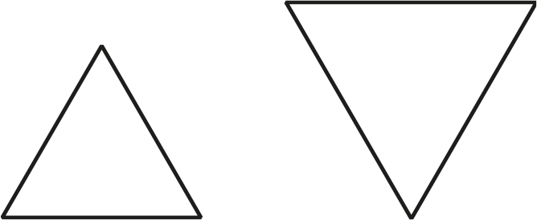
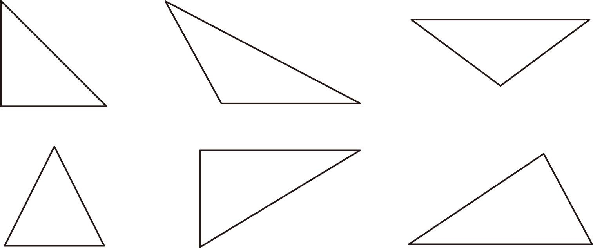
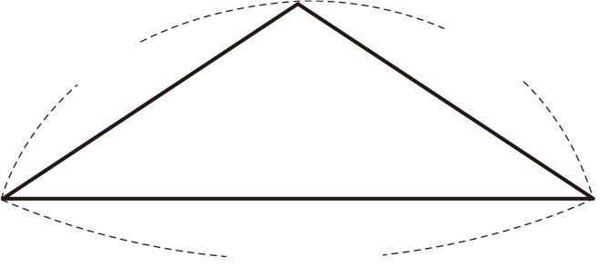
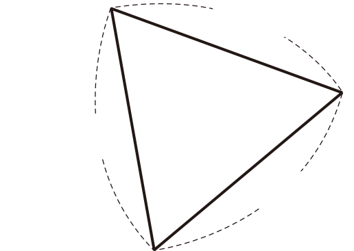

- 개념 정리
- 1
- 2
- 3
- 4
- 5
-
-
이등변삼각형 : 두 변의 길이가 같은 삼각형
-
정삼각형 : 세 변의 길이가 같은 삼각형
-
-
1 이등변삼각형을 모두 찾아 기호를 써 보세요.
 가나다라마바가, 다, 라 -
2 정삼각형을 모두 찾아 기호를 써 보세요.
가나다라마바나, 다 -
3 안에 알맞은 수를 써넣으세요.
이등변삼각형 9 cm15 cmcm9정삼각형 8 cm8 cmcm8 -
4 삼각형을 다음과 같이 분류하였습니다. 분류 기준을 써 보세요.
분류 기준예세 변의 길이가 모두 같은가요? -
5 어떤 삼각형인지 찾아 표 하고, 그 까닭을 써 보세요.
8 cm8 cm9 cm이등변삼각형정삼각형까닭두 변의 길이가 같기 때문입니다.